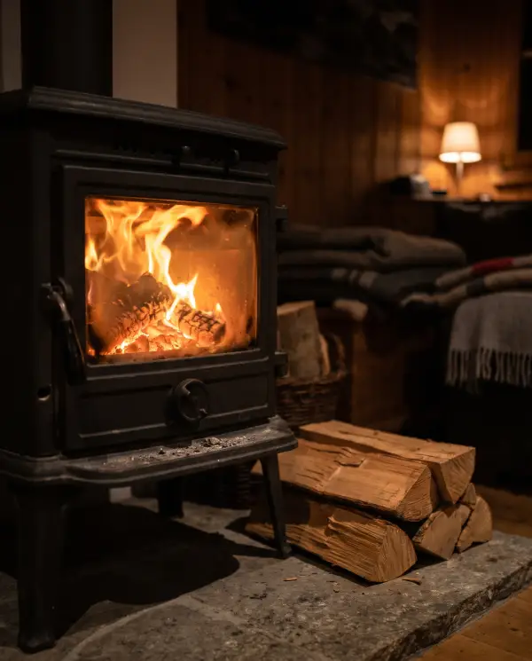
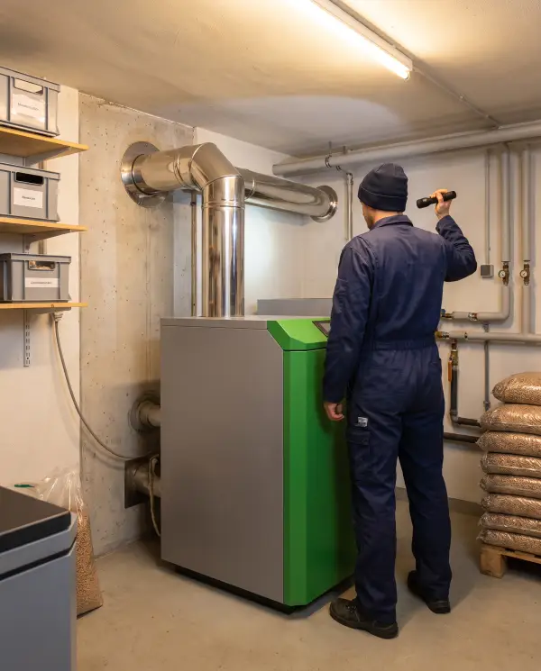
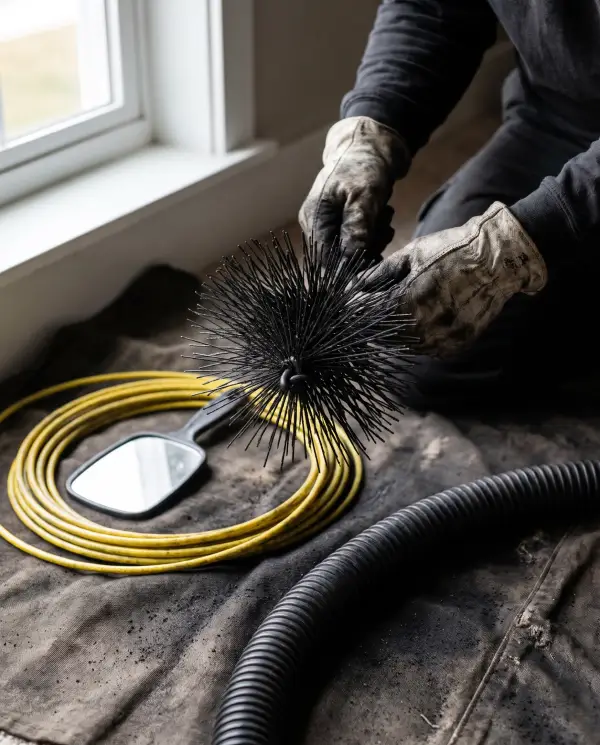
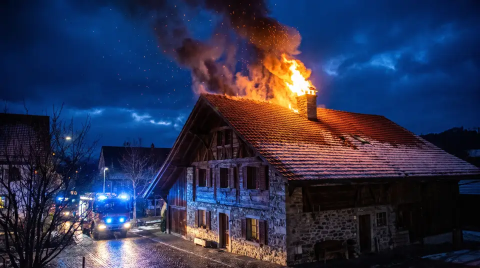
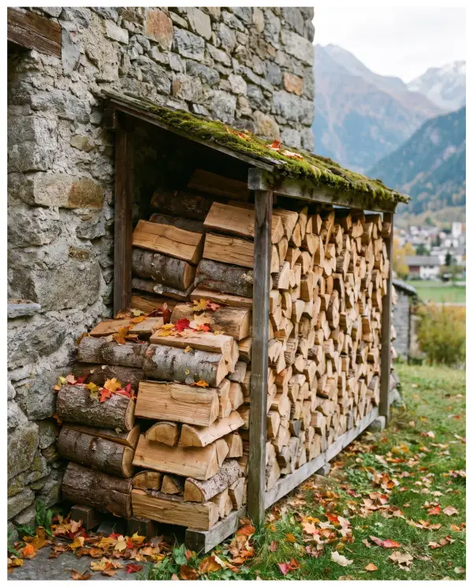

Poêles et cheminées de salon
Le feu de bois du salon, même s’il ne sert que quelques soirs d’hiver.
- Poêles à bois, inserts, fourneaux
- Cheminées ouvertes de salon
- Poêles à pellets
Colombier, depuis 1993
Poêles, cheminées de salon, chaudières au bois, aux pellets, au mazout ou au gaz : Eric Fallet nettoie, contrôle et vous dit franchement où en est votre installation.
Toutes les installations de chauffage d’une maison ou d’un immeuble, du petit poêle d’appoint à la chaudière centrale.

Le feu de bois du salon, même s’il ne sert que quelques soirs d’hiver.

Le chauffage principal de la maison, quel que soit le combustible.

Le conduit de fumée et son raccordement, nettoyés puis vérifiés.
Le canton fixe un minimum de nettoyages selon votre installation. Ce n’est pas une recommandation : c’est la loi, et aucun contrat d’entretien ne remplace le passage du ramoneur.
Avec deux passages par an, l’un au moins tombe pendant la saison de chauffage. Une installation utilisée seulement de temps en temps doit tout de même être contrôlée une fois par an.
Planifier mon passage| Votre installation | Minimum légal |
|---|---|
| Chauffage au bois ou aux pellets | 2 par an |
| Cheminée de salon, poêle d’appoint | 1 par an |
| Mazout, brûleur pulsé jusqu’à 70 kW | 1 par an |
| Mazout au-delà de 70 kW, poêle à mazout | 2 par an |
| Gaz, brûleur pulsé | 1 par an |
| Gaz atmosphérique | 1 tous les 2 ans |
Jusqu’au 30 juin 2025, la commune vous attribuait un ramoneur. Le nouveau règlement cantonal a supprimé ces conventions : vous appelez le maître ramoneur autorisé de votre choix. Le ramonage, lui, reste obligatoire.
Un appel ou un message, et on fixe une date qui vous arrange.
Conduit et raccordement brossés au hérisson, la suie aspirée, la pièce protégée.
L’état du conduit et de l’installation, vérifié. Tout défaut vous est signalé par écrit.
Le passage est inscrit au registre cantonal de l’ECAP. Vous êtes en règle.

Feu de cheminée
118Le conduit siffle, la trappe claque, des étincelles sortent du toit : appelez les pompiers.
En 2026, Eric Fallet est de piquet cantonal six semaines.
Un feu propre encrasse moins le conduit et limite le risque de feu de cheminée.

Eric Fallet, à Colombier, rue Basse 12a. Titulaire: Eric Georges Fallet, de Dombresson, à Colombier, Service de ramonage.
Les réponses viennent du règlement cantonal sur le ramonage. Pour votre cas précis, un appel suffit.
032 842 38 67Oui. Depuis le 1er juillet 2025, vous pouvez faire appel au maître ramoneur de votre choix, à condition qu’il soit autorisé à pratiquer dans le canton de Neuchâtel. Eric Fallet figure sur la liste cantonale.
Oui. Une installation utilisée de façon purement occasionnelle doit être contrôlée au moins une fois par an.
Depuis la libéralisation, les prix sont libres et le canton demande qu’ils soient annoncés avant l’intervention. Tarifs d’Eric Fallet à compléter.
Non, ce sont deux contrôles distincts. Le contrôle de combustion des chauffages au mazout (tous les deux ans) et au gaz (tous les quatre ans) relève du Service de l’énergie et de l’environnement. Le ramoneur vérifie que la vignette est valable.
Il le signale par écrit au propriétaire, au locataire et à la commune, dans un délai de 30 jours. Vous savez exactement quoi corriger.
L’un au moins doit avoir lieu pendant la période de chauffage. L’autre se cale à votre convenance.
Oui : toute modification ou mise hors service d’une installation s’annonce à la commune dans les 30 jours.
Le plus simple : un coup de fil. Ou laissez vos coordonnées, Eric vous rappelle.
032 842 38 67Où ? Basé à Colombier (Milvignes), autorisé dans tout le canton de Neuchâtel.